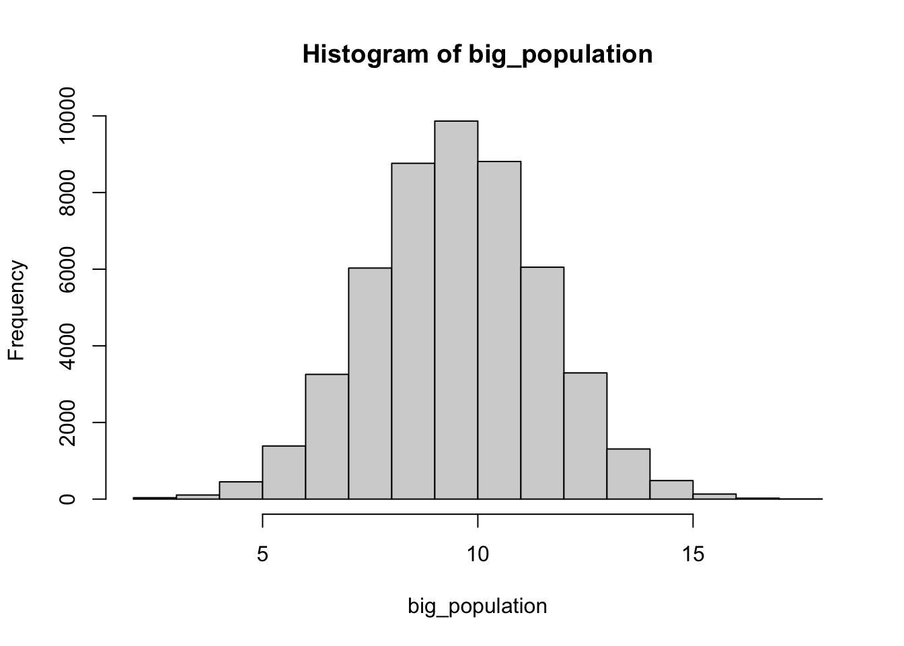
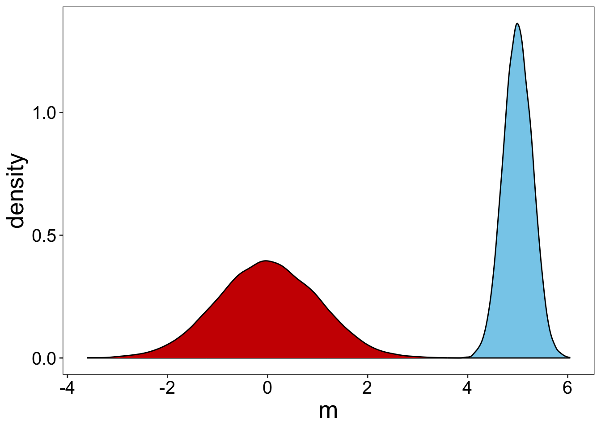
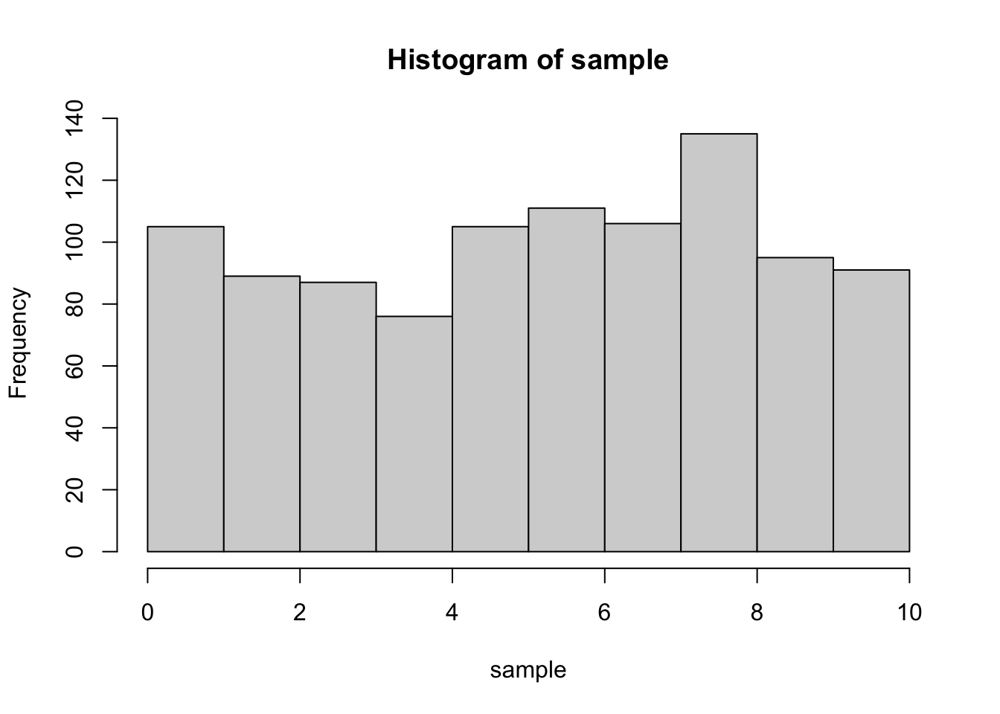
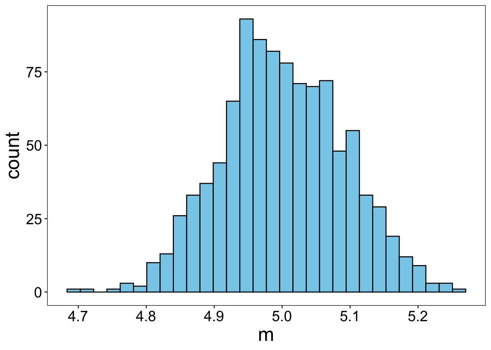
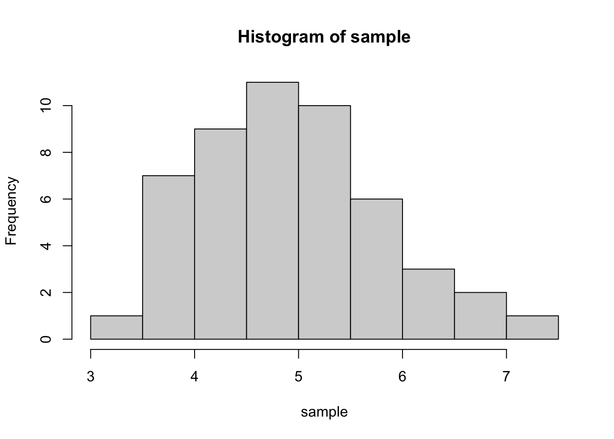

sample_size = 100CLT
Distributions and descriptive statistics
Normal distribution
# here mean and sd - parameters in "general" population
# n - number of elements we choose from population
norm_sample = rnorm(n=sample_size, mean=0, sd=1)
#parameters of **sample**
mean(norm_sample)[1] -0.08677892sd(norm_sample)[1] 1.122054Exponential distribution
exp_sample = rexp(n=sample_size, rate=2)
# mean()
# sd()Uniform distribution
unif_sample = runif(n=sample_size, min=0, max=1)
# mean()
# sd()Discrete (!) distributions
rbinom(n=sample_size, size=10, prob=0.5) [1] 5 4 5 7 3 5 5 6 7 5 5 3 6 3 4 5 3 5 5 6 3 5 6 6 4 6 4 5 5 7 3 6 4 7 5 4 6
[38] 8 5 5 7 3 7 6 3 4 3 5 3 6 4 7 4 7 5 3 1 5 6 4 5 4 4 7 4 4 5 7 3 4 6 5 5 3
[75] 4 5 6 5 8 3 3 6 5 1 5 4 5 6 6 5 6 3 6 4 3 6 5 4 2 6rpois(n = sample_size, lambda = 1) [1] 3 1 1 2 1 2 0 2 2 0 0 1 1 2 1 2 0 1 0 2 1 0 1 1 0 0 0 1 0 0 1 0 1 0 1 0 1
[38] 1 0 0 0 2 0 1 0 1 1 2 2 2 1 2 1 1 1 0 2 0 1 1 1 0 2 2 1 1 0 0 0 2 1 2 1 0
[75] 3 2 0 1 2 1 0 1 2 0 2 2 1 1 3 0 1 3 0 1 3 1 1 2 3 1Quantiles
Show quartiles of
norm_sampleShow 2.5% and 97.5% quantiles of
unif_sample
# quantile()Sampling
From population defined by us
true_mean = 10
true_sd = 2
# big_population = read_csv('data.csv')
big_population = rnorm(50000, mean = true_mean, sd = true_sd) |> round()
big_population |> hist()
sample_size = 10
sample_0 = sample(x=big_population, size=sample_size)
sample_0 [1] 11 8 10 11 10 11 8 13 12 12Setting the population by possible values and probabilities
!NB sum of probabilities should be equal to 1
values = c(1,100,10000)
probs_of_values = c(0.2, 0.5, 0.3)
sum(probs_of_values) == 1[1] TRUESampling
sample_size = 10
sample_2 = sample(values, sample_size, replace=TRUE, prob=probs_of_values)replace=TRUEfor repeatable drawing same values from possible values
From mathematically defined distribution
sample_size = 10
sample_1 = rnorm(sample_size, mean=0, sd=1)
sample_1 [1] -0.6208749 -0.5738564 1.1847761 0.2475966 -0.2099210 -0.1507523
[7] -0.2705518 -0.3619384 1.3868180 1.2117212CLT
Standard error
se = function(x){
sd(x)/sqrt(length(x))
}Generating samples
#uniform
a=0
b=10
## -> mean = ??
population = runif(100000, a, b)
sample_size = 100
n_samples = 10000
df_trial <- tibble(
sample_ID = rep(1:n_samples, each=sample_size),
value = sample(x=population,
size=sample_size*n_samples,
replace = TRUE,
prob=rep(1/length(population), length(population))
)
)
df_trial# A tibble: 1,000,000 × 2
sample_ID value
<int> <dbl>
1 1 1.34
2 1 7.57
3 1 0.811
4 1 9.21
5 1 2.70
6 1 6.74
7 1 8.73
8 1 6.85
9 1 8.27
10 1 6.41
# ℹ 999,990 more rowsStandardizing each sample
df_standart =
df_trial |>
group_by(sample_ID) |>
summarize(m = mean(value)) |>
mutate(z_m = (m - mean(m))/sd(m) ) # <-- Formula!
df_standart# A tibble: 10,000 × 3
sample_ID m z_m
<int> <dbl> <dbl>
1 1 4.97 -0.180
2 2 4.85 -0.578
3 3 4.69 -1.13
4 4 5.00 -0.0803
5 5 5.09 0.227
6 6 5.34 1.08
7 7 5.23 0.721
8 8 4.84 -0.615
9 9 4.78 -0.836
10 10 4.72 -1.03
# ℹ 9,990 more rows#for non-standard
mean(df_standart$m)[1] 5.022278sd(df_standart$m)[1] 0.2925824#for standard
mean(df_standart$z_m)[1] -1.458572e-15sd(df_standart$z_m)[1] 1 df_standart |>
ggplot() +
geom_density(aes(x=m),
# bins=30, col='black',
fill='skyblue') +
geom_density(aes(x=z_m),
# bins=30, col='black',
fill='red3')
Sample from uniform distribution
sample_size = 1000
sample = runif(n=sample_size, min=0, max=10)
hist(sample)
Generating samples
n_samples = 1000
df_trial <- data.frame(
sample_ID = rep(1:n_samples, each=sample_size),
value = runif(sample_size*n_samples, 0, 10)
# generating sample_size*n_samples values from the same distibution
)
df_means_from_samples =
df_trial |> group_by(sample_ID) |>
summarize(m = mean(value))
df_means_from_samples |>
ggplot() +
geom_histogram(aes(x=m), bins=30, col='black', fill='skyblue')
Sample from exponential distribution
Write the code!
sample_size = 1000
# sample = rexp()
# hist()Generating samples
Write the code!
n_samples = 1000
df_trial <- data.frame(
sample_ID = rep(1:n_samples, each=sample_size),
# value =
)
df_means_from_samples = df_trial |>
# group_by() |>
# summarize()
df_means_from_samples |>
# ggplot() +
# geom_histogram()Confidence intervals
Using standard normal
Sample
true_mean = 5
true_sd = 1
sample_size = 50
sample = rnorm(sample_size, true_mean, true_sd)
sample_mean = mean(sample)
# sample_sd = sd(sample_norm)
sample_se = se(sample)
hist(sample)
CI (95%)
quantiles = qnorm(0, 1, p = c(0.025, 0.975)) #+- 1.96
c(
sample_mean + quantiles[1] * sample_se,
sample_mean + quantiles[2] * sample_se
)[1] 4.692595 5.185225Confidence level
sample_size = 100
n_samples = 1000
true_mean=5
df_trial <- tibble(
sample_ID = rep(1:n_samples, each=sample_size),
value = rnorm(sample_size*n_samples, true_mean, 2)
)
quantiles = qnorm(0, 1, p = c(0.025, 0.975))
df_ci = df_trial |> group_by(sample_ID) |>
summarize(mu = mean(value),
se_sample = se(value),
conf.min = mu + quantiles[1] * se_sample,
conf.max = mu + quantiles[2] * se_sample) |>
mutate(out = ifelse((true_mean < conf.max) & (true_mean > conf.min), 'ok', 'missed'))
# df_ci |>
# ggplot(aes(y=)) +
# geom_errorbar(aes(xmin = , xmax = , col=)) +
# geom_vline(aes(xintercept = ), col='red', lty=2, size=2) +
# labs(y="Sample", color='CI covers true mean') Try to change sample size and see what will happen!
t-distribution
true_mean = 5
true_sd = 2Sample
sample_size = 50
sample = rnorm(sample_size, true_mean, true_sd)
sample_mean = mean(sample)
# sample_sd = sd(sample_norm)
sample_se = se(sample)
hist(sample)
CI (95%)
quantiles = qt(df = length(sample)-1, p = c(0.025, 0.975))
quantiles[1] -2.009575 2.009575c(
sample_mean + quantiles[1] * sample_se,
sample_mean + quantiles[2] * sample_se
)[1] 4.681723 5.874178Try different size of sample!
Another method for calculation CI with t-distribution
Looking only on “95 percent confidence interval:”
t.test(sample)
One Sample t-test
data: sample
t = 17.789, df = 49, p-value < 2.2e-16
alternative hypothesis: true mean is not equal to 0
95 percent confidence interval:
4.681723 5.874178
sample estimates:
mean of x
5.277951